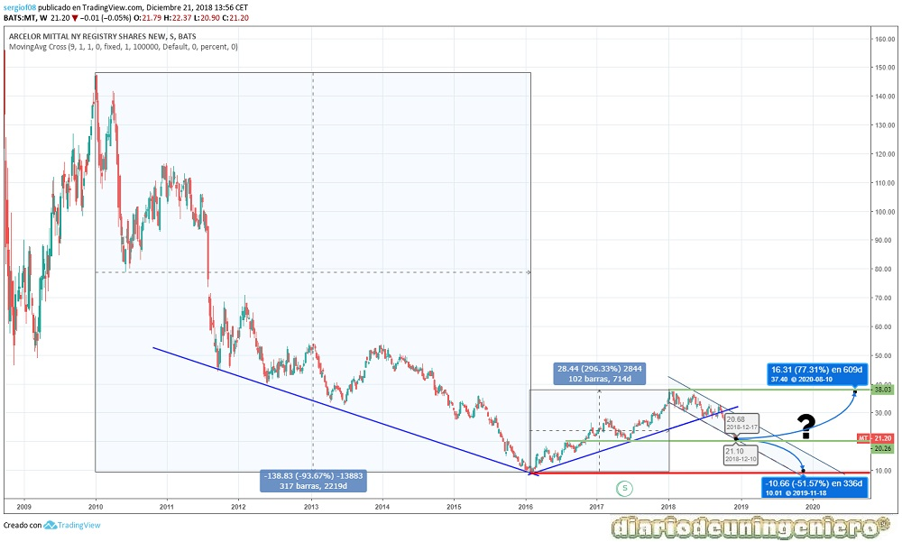

ArcelorMittal es la mayor compañía siderúrgica mundial, con casi 200.000 empleados en más de 60 países. Fue fundada en 2006 mediante la fusión de Mittal Steel y Arcelor.
En España su actividad se centra principalmente en la zona norte, sobre todo en País Vasco, Navarra, y Asturias. En total cuenta con 17 centros de distribución y la plantilla total a 2018 asciende a 8.605 empleados. La producción en España en 2017 fue de 5,9 millones de toneladas de acero, lo que representa un 41,1% de la producción nacional (14,5 millones).
En 2005 el mundo comenzaría un ciclo alcista debido al hambre de las materias primas de China. El gigante chino empezaba a despertar y a consumir acero a un ritmo nunca visto. Como consecuencia de ello, el hierro y el cobre subirían exponencialmente ya que la producción del país de estas materias pese a ser enorme estaba muy por debajo de las necesidades. En ciclos alcistas de materias primas el elemento que suele ser premonitorio de subidas en las demás es el cobre y el que marca la demanda real el hierro. El acero está formado por hierro en su mayoría, de ahí que Arcelor subiera tanto.
Sin embargo, estas subidas suelen ser muy rápidas y siempre llegan a un punto donde esta por encima de las necesidades. En 2008 se sufría un ajuste en cuanto se empezó a retroceder en la demanda. Un ajuste por encima también del necesario y después volvería el alza. A partir de 2012 China comenzaría a aumentar el número de minas y trabajadores para no necesitar importar tanta materia prima. Esto repercutiría en los fabricantes como el caso de Arcelor o el caso de las grandes acereras americanas. China crecía casi a un 15% anual, algo espectacular y que empezaría a ir suavizándose hasta llegar en 2015 a un ritmo del 7%. A partir de 2014 además el auge del país asiático haría que la clase media china creciera con fuerza hasta llegar casi a 600 millones de chinos. El número de ricos también crecería con fuerza llegando a casi 100 millones de personas. Esto se traduciría en una mayor diversificación del capital y el emerger de la bolsa china. Empezaría un boom de los valores chinos, tantos de construcción como tecnológicos y la bolsa china crecería a un ritmo vertiginoso.
En esos momentos, mediados de 2012, Arcelor estaría creando el principio de una fase bajista. Como consecuencia de la creación de numerosas industrias siderúrgicas y minas en China, al reducir su consumo empezó a tener excedentes. Esto provocaría un efecto boomerang en la economía mundial en la que el acero chino empezaría a llegar a países a los cuales estaba comprando. La competencia empezó a ser muy grande hasta el punto de colocar acero por debajo del precio de fabricación (dumpping). Para ello tanto la Unión Europea como Estados Unidos comenzarían a aplicar medidas arancelarias, con unos incrementos en el 20% en los impuestos aduaneros.
Esto no sería suficiente y el valor comenzaría a sufrir, sin saberse muy bien hasta cuándo podría llegar esta crisis. El valor llego a caer a los 4 euros, si bien en las gráficas posteriores no se ve así ya que se haría un contrasplit de 2:5 posteriormente que cambiaría los históricos del precio de acciones. Si contamos que a principio de 2015 el precio de Arcelor estaba en torno a los 10 euros y llego a caer a casi 4 euros eso suponía una caída de la empresa del 60%. Y es que en el primer semestre de 2015 el grupo perdería 549 millones de dólares, lo que supuso multiplicar por 3,57 sus pérdidas del mismo periodo de 2014, que fueron de 153 millones de dólares. El EBIDTA en el año disminuiría en 1000 millones y la facturación caería en la misma proporción, de un 33%.
A finales de 2015 además de la crisis de China por su desaceleración, se sumaría otra crisis como fue la caída del petróleo debido a la lucha entre las empresas extractoras de Shale americanas y Arabia Saudita. Este país habría incrementado su producción al máximo para inundar el mercado de crudo y conseguir disminuir el precio del barril de Brent por debajo de los 30 dolares a finales del año. Con esta medida se pretendía el cierre de refinerías en Estados Unidos y deteriorar cuentas de grandes petroleras americanas. En cuanto el precio comenzó a bajar muchos pozos tendrían que cerrar ya que el precio de extracción llegaba en muchos casos a 50 dólares. Sin embargo muchas reducirían su producción antes de decidir que hacer. Arabia Saudita iría apretando y esta subida afectaría a terceros países tan dependientes del petróleo como Venezuela, Nigeria o Rusia. Estos países no pertenecientes a la OPEP comenzarían a sufrir también y se crearía una especie de crisis mundial. A pesar de países como España tan dependientes del precio del crudo que una bajada suponía en aumentar el crecimiento del PIB en más de un 1% anual también le tocaría su parte.
A partir de 2016, una vez que esta crisis desapareciera las acciones de Arcelor comenzarían un rally. El rally se aceleraría con la victoria de Trump y se conseguiría llegar a los valores de la acción de comienzos de 2015.
En cuanto a fundamentales, la empresa tiene hoy en día unos niveles estables de producción y sus beneficios han crecido año tras año. El EBDITA ha subido sin embargo la deuda de la compañía sigue siendo alta. Las perspectivas de la empresa a mi modo de ver son buenas
| ### | 2014 | 2015 | 2016 | 2017 | 2018 |
|---|---|---|---|---|---|
| Deuda/ Caja empresa | Deuda Total (M) | 13.040 | 58.527 | 54.082 | 57.667 | 57.366 |
| Beneficio/valor acción | |||||
| Capitalización(M) | 1.437 | 939 | 1.148 | 1.257 | 1.449 |
| EBDITA (M) | 5.981 | 4.815 | 5.799 | 7.033 | 7.140 |
| PER | - | - | 40 | 5,57 | 6,33 |
| Beneficio Neto (M) | - | -7.314,7 | 1.675 | 3.692,5 | 4.726,7 |
| Dividendo | 27.6777 | ||||
| Rentabilidad por acción (%) | 0,91 | - | 0,80 | 2,09 | 2,73 |
| Deuda/EBDITA | 2,18 | 12,15 | 9,32 | 8,2 | 8,034 |
Si nos fijamos en el gráfico de largo plazo observamos una gran V típica de los valores cíclicos como este. En ella tenemos un mínimo a principios de 2016 en torno a los 10 euros. Este valor es ahora el soporte máximo que encontramos en el valor y que a día de hoy no debería superarse. Nos encontramos ahora en una encrucijada. Por un lado, debido a la espiral bajista de los índices mundiales donde el Dow Jones ha roto soportes el valor podría bajar hasta mínimos, aunque la situación en la empresa es mucho mejor que cuando bajo ya que la viabilidad de la empresa esta asegurada.
En caso de confirmarse la rotura del primer soporte en 20 euros lo mejor sería esperar a entrar en la zona próxima a los 10 euros con un stop del 10% sobre mínimos. La probabilidad de que esto suceda es inferior al 50%, por lo que la estrategia adecuada sería mantener y no invertir ni desinvertir nada en este valor.

Si nos vamos al gráfico de corto plazo se ve una clara divergencia a partir de octubre de este año, 2018, en el que se ha roto la línea de la tendencia alcista que llevaba y se ha llegado a mínimos anuales. Este soporte es muy importante el no perderlo y de conseguir remontar el valor se iría fácilmente a máximos. Para ello tendría que batir la resistencia que encontramos en 28 euros. Esa sería la apertura de la ventana de compra que buscamos.
De no ser así, podría seguir un canal lateral entre los 20 y los 28 euros por un tiempo, por lo que se recomienda reducir exposición en caso de que no consiga batirse la resistencia de los 28 euros y invertir en otros valores con un horizonte más claro.

Usando este sitio web aceptas nuestros Terminos y condiciones. Por favor Aceptar esto antes de usar el sitio web.
© 2016 - All Rights Reserved - Diseñada por Sergio López Martínez
El sitio se mantiene gracias a la publicidad, por favor Desactiva Adblock para seguir navegando
He desactivado Adblock![[Valid RSS]](https://www.feedvalidator.org/images/valid-rss-rogers.png "Validate my RSS feed")